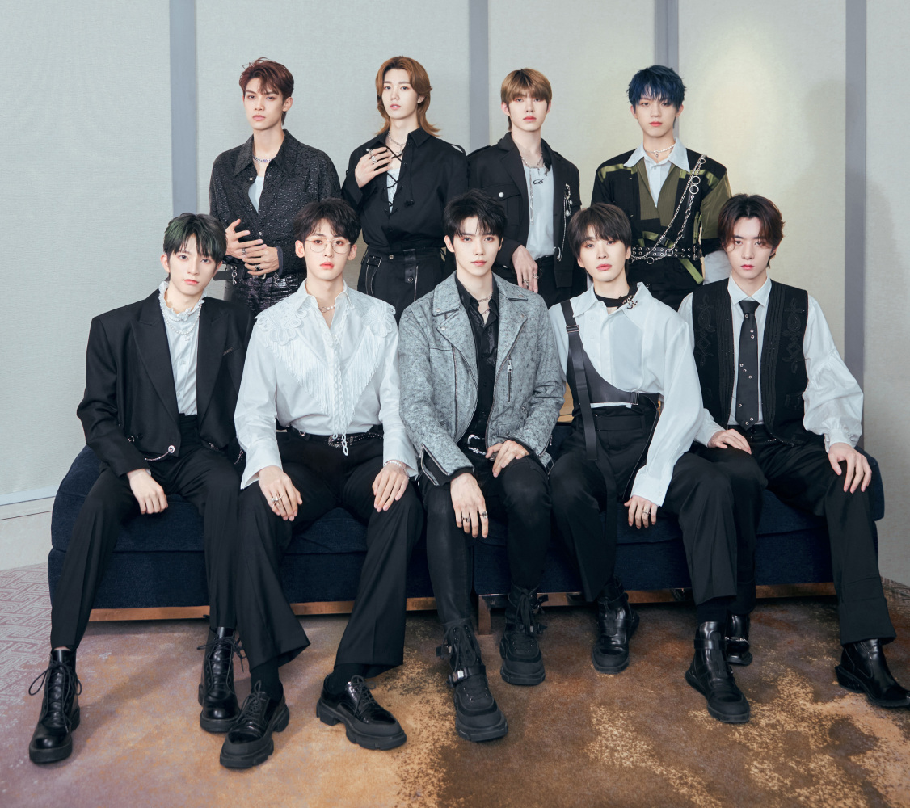
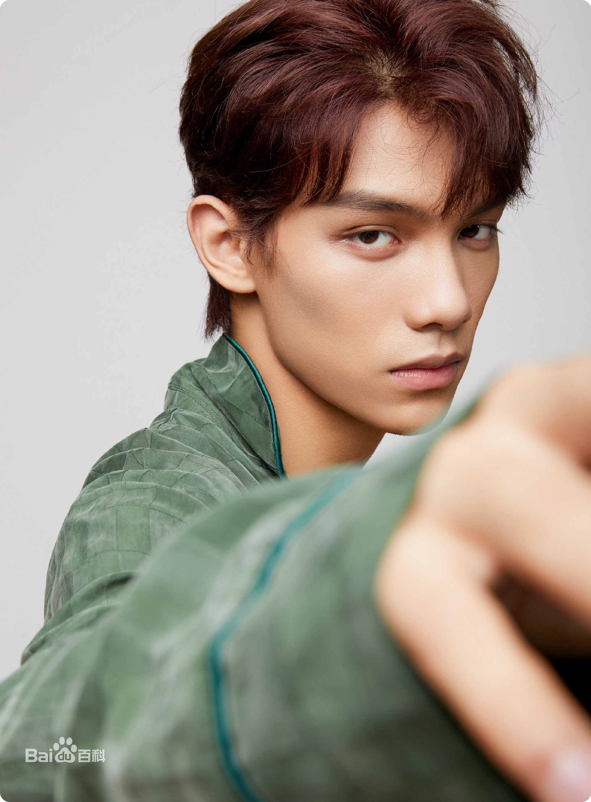
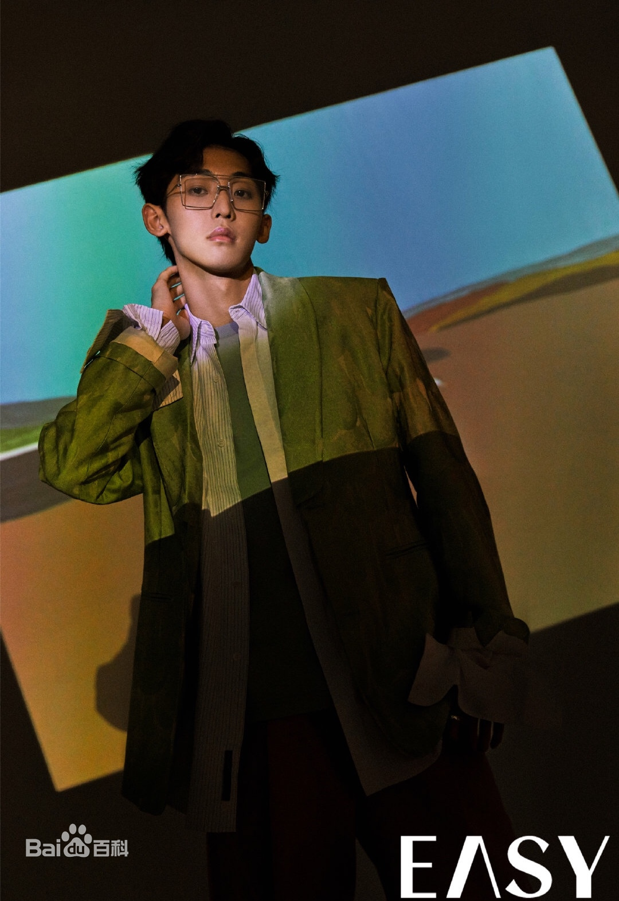
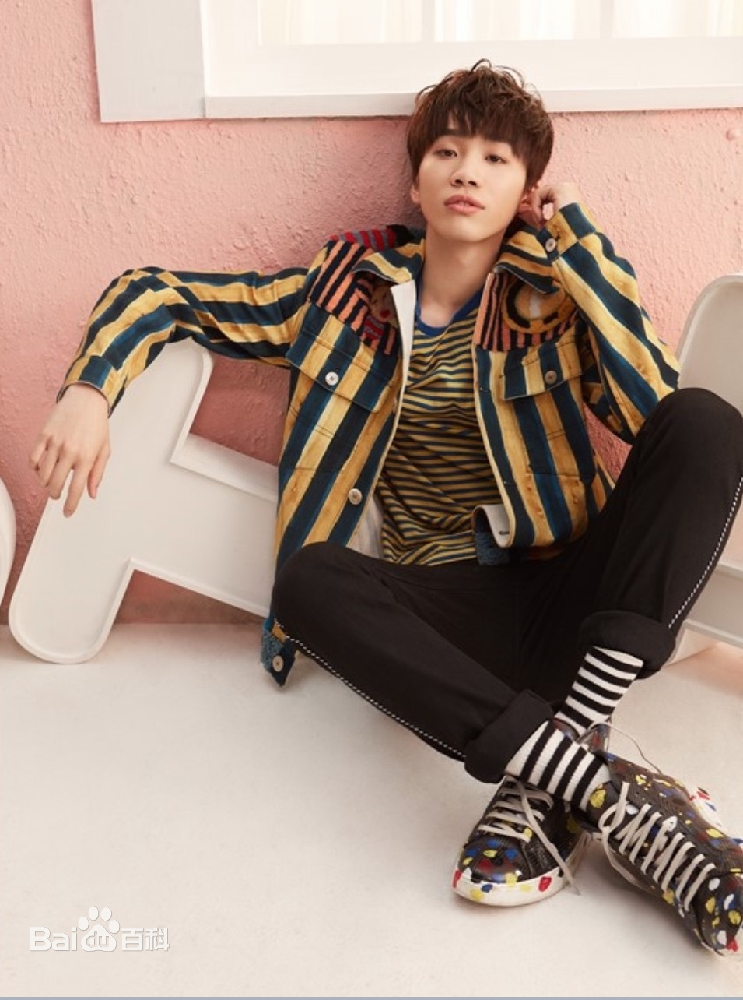
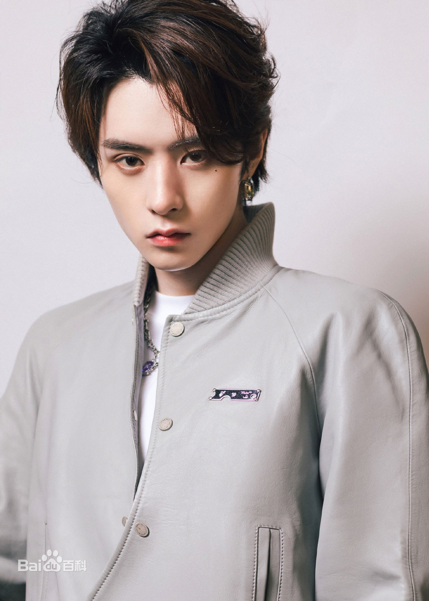
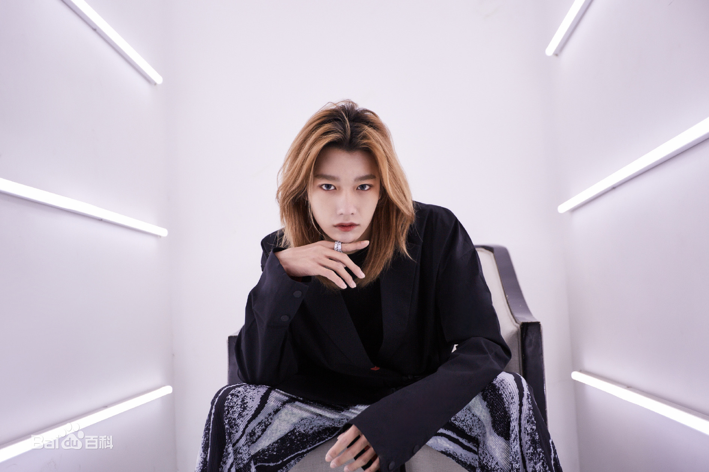
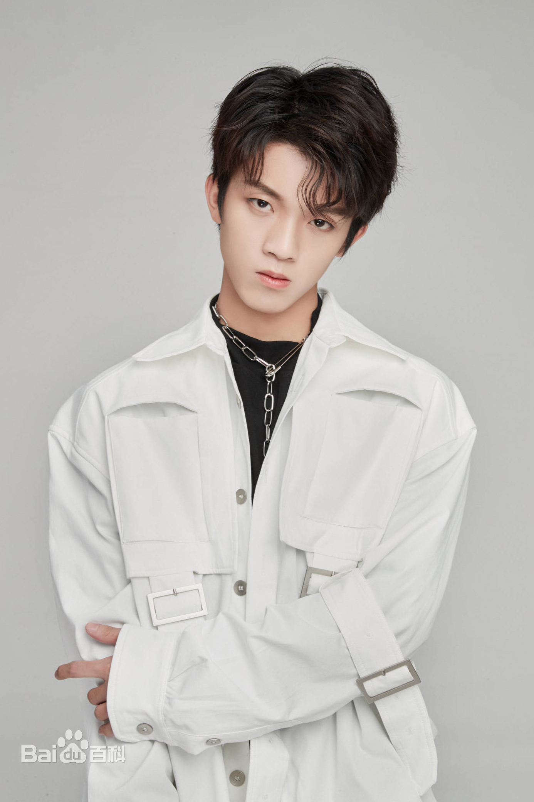
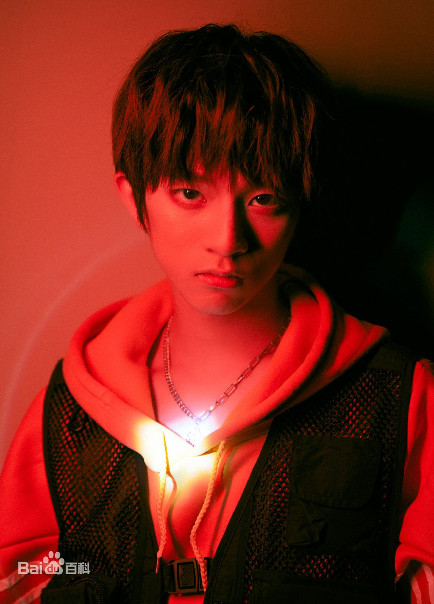

IXFORM is a Chinese boy group with 9 members that consists of Jun Liu Duan XingXing Jojo Tang, Lian Huaiwei, Jerome.D, Luo Yizhou, Kachine Sun, Sun Yiihang and Neil Liu. They debuted on July 29th, 2021. IXFORM was created by a survival show called 'Youth With You 3'. The fandom name is FORMIX and the fandom color is purple, pink and orange.

MEMBERS
JUN LIU

stage name: Jun Liu
birth name: Liu Jun
birthday: December 12th, 1997
zodiac sign: Saggitarius
height: 174 cm
nationality: Malaysian
bornplace: Serembam, Malaysia
DUAN XINGXING

stage name: Duang Xing Xing
birth name: Duan Xing Xing
birthday: January 10th, 1998
zodiac sign: Capricorn
height: 176 cm
nationality: Chinese
bornplace: Guizhou, China
JOJO TANG

stage name: Jojo Tang
birth name: Tang Jiu Zhou
birthday: February 5th, 1998
zodiac sign: Aquarius
height: 183 cm
nationality: Chinese
bornplace: Changchun, Jilin, China
LIAN HUAIWEI

stage name: Lian Huaiwei
birth name: Lian Huaiwei
birthday: March 18th, 1998
zodiac sign: Pisces
height: 178 cm
nationality: Chinese
bornplace: Quanzhou, Fujian, China
JEROME.D

stage name: Jerome.D
birth name: Deng Xiao Ci
birthday: August 6th, 1998
zodiac sign: Leo
height: 183 cm
nationality: Chinese
bornplace: Guizhou, China
LUO YIZHOU
stage name: Luo Yi Zhou
birth name: Luo Yi Zhou
birthday: March 16th, 2000
zodiac sign: Pisces
height: 185 cm
nationality: Chinese
bornplace: Yichuan, Ningxia, China
KACHINE SUN

stage name: Kachine Sun
birth name: Sun Ying Hao
birthday: June 6th, 2000
zodiac sign: Gemini
height: 180 cm
nationality: Mongolian
bornplace: Chifeng, Mongolia, China
SUN YIHANG

stage name: Sun Yi Hang
birth name: Huang Yu Hang
birthday: October 21st, 2001
zodiac sign: Libra
height: 175 cm
nationality: Chinese
bornplace: Chongqing, China
NEIL LIU

stage name: Neil Liu
birth name: Liu Guan You
birthday: May 14th, 2002
zodiac sign: Taurus
height: 173 cm
nationality: Taiwanese
bornplace: Kaohsiung, Taiwan, China